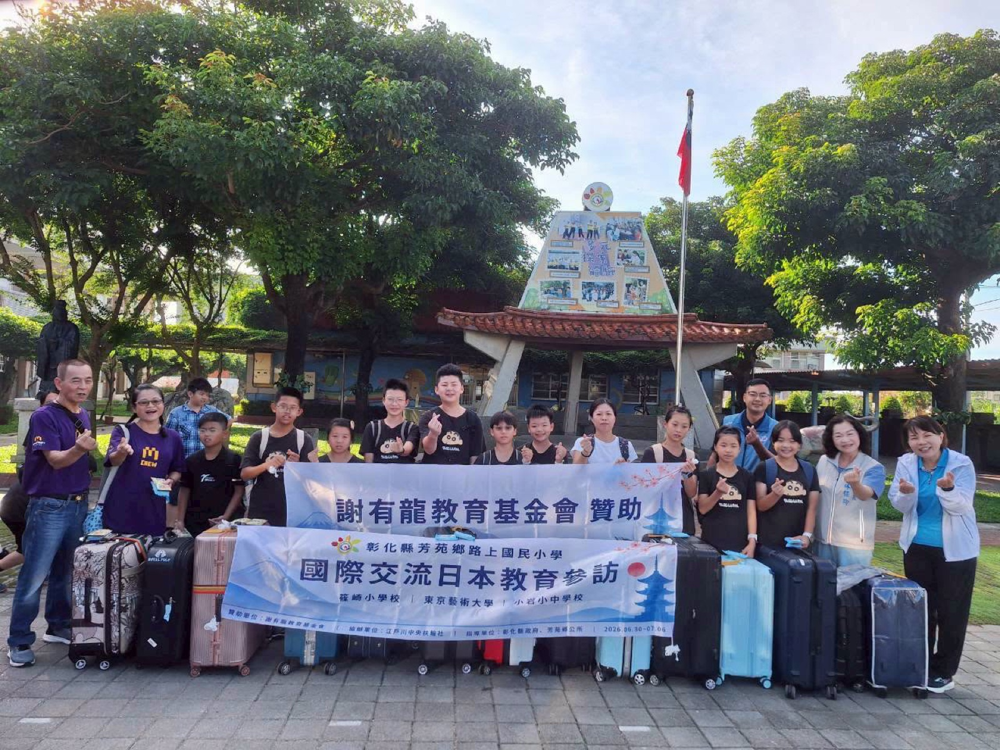
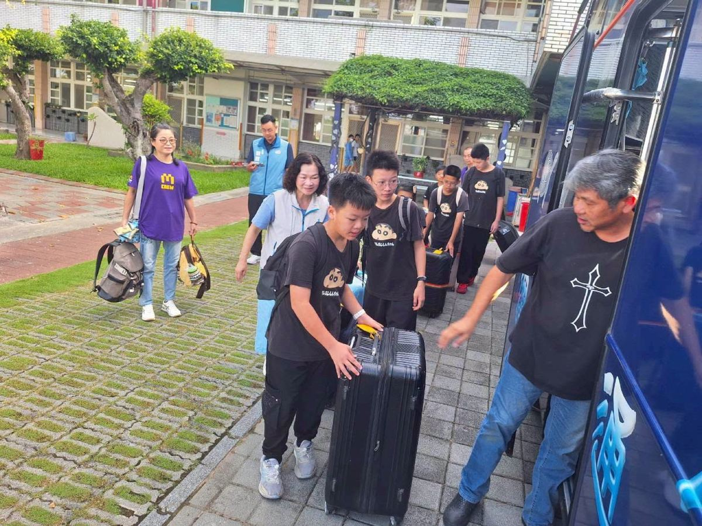
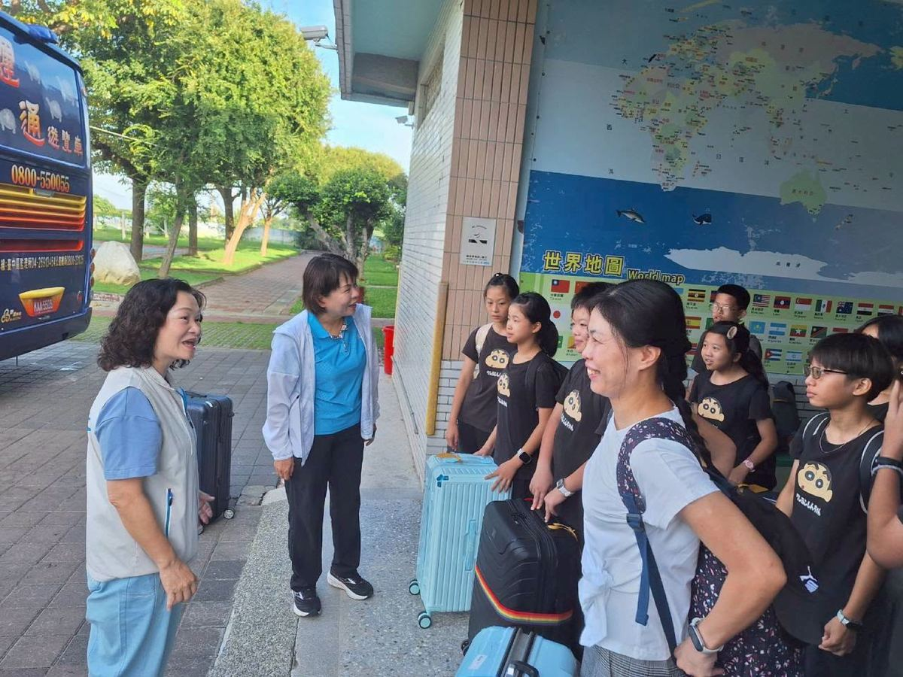

The Japan Study Tour delegation from Fangyuan Township's Lushang Elementary School held its send-off flag ceremony this morning, the 30th. Fangyuan Township Mayor Lin Bao-ling personally presented the school flag, offering blessings and encouragement to the teachers and students about to begin seven days and six nights of educational exchange in Japan — a moment symbolizing the children carrying their hometown's hopes as they bravely step out into the world. After the ceremony, teachers, students, and guests posed for photos together before boarding buses for the airport, officially beginning their journey of deep learning in Japan.
Secretary Tsai Li-chien, representing Changhua County Magistrate Wang Hui-mei, attended on the magistrate's behalf, conveying her care and good wishes to the delegation and presenting small gifts, wishing the children a safe journey, smooth exchanges, and a trip full of rewarding experiences.
The defining feature of this trip is that it is not an ordinary graduation trip, but an overseas field-study program centered on “reading the world, understanding culture, and cultivating international awareness.” The children will step directly into a Japanese elementary school, attending classes, sharing meals, and interacting with local students. Through observing local regeneration, urban order, cultural preservation, public space, and everyday life, they will learn how different cultures shape a city and a nation — turning international education into a lived experience rather than mere sightseeing. Every stage of the itinerary was carefully woven around this learning theme, reflecting thoughtful, integrated planning.
Notably, this exchange grew out of the generosity of Lushang Elementary's own distinguished alumnus and entrepreneur, Chairman Hsieh Wen-hsiang, whose wish to give back to his alma mater and nurture local talent made this international field study possible — hoping that children from this rural coastal township can encounter the world at a formative stage in their lives, and learn that even children from a small seaside town can make the whole world their classroom and boldly chase their dreams.
Mayor Lin Bao-ling remarked that education is the township's most important investment: international exchange and cultural experience not only let children see how people live in other countries, but also cultivate the ability to observe, think, and respect diverse cultures. For this trip, the township specially prepared Fangyuan's famous yam noodles for the delegation to share with their Japanese hosts, hoping to let Japanese teachers and students taste a bit of Fangyuan — turning the children into small ambassadors for their hometown's culture and local produce.
This flag-raising ceremony marks more than just a departure — it symbolizes a moment when the local community, the school, businesses, and society all come together to send the next generation out from home and into the world. What begins with this single journey is not only seven days and six nights of learning, but a lifelong sense of vision and courage to face the world.
Special Thanks
With heartfelt thanks to the Hsieh Yu-lung Education Foundation for its strong support of this Japan study visit; to Chairman Hsieh Wen-hsiang for giving back to his alma mater and making this international field-study program possible; to the Changhua County Government for its care for international education, represented on-site by Secretary Tsai Li-chien on behalf of Magistrate Wang Hui-mei with words of encouragement and gifts; to the Fangyuan Township Office for its full support of local education, with Mayor Lin Bao-ling personally presenting the flag and preparing Fangyuan's signature yam noodles to share; and to all of Lushang Elementary's faculty, the Parents' Association, volunteers, and everyone who helped make this precious international learning journey possible for the children.
Wishing the Lushang Elementary Japan Study Tour delegation a safe journey, a fulfilling exchange, and a trip full of rewards — carrying the world back to Fangyuan, and carrying Fangyuan out into the world!


芳苑鄉路上國小「日本見學走讀」教育參訪團今（30）日上午舉行出發授旗儀式，由芳苑鄉長林保玲親自到場授旗，為即將展開七天六夜日本教育交流的師生送上祝福與勉勵，象徵孩子們帶著家鄉的期盼勇敢走向世界。授旗儀式後，全體師生與貴賓合影留念，隨即搭車前往機場，正式展開日本深度學習之旅。
活動中，縣長秘書蔡禮謙代表彰化縣長王惠美親臨現場，轉達縣長對參訪團師生的關心與祝福，並致贈小禮物，祝福孩子們一路平安、交流順利、滿載而歸。
此次活動最大的特色，並非一般畢業旅行，而是一場以「閱讀世界、理解文化、培養國際素養」為核心的海外走讀課程。孩子們將實際走入日本小學，與當地學生共同上課、用餐及交流，並透過地方創生、城市秩序、文化保存、公共空間及生活觀察等多元面向，從旅行中學習理解不同文化如何形塑一座城市與一個國家，讓國際教育真正落實於生活體驗，而非停留於景點觀光。整體行程兼顧教育深度、文化交流與生活觀察，每一段安排皆圍繞學習主題循序鋪陳，展現高度整合與細膩規劃。
值得一提的是，本次交流緣起於路上國小傑出校友、企業家謝文祥董事長，秉持回饋母校、培育家鄉人才的初心，促成本次國際走讀學習，希望讓偏鄉孩子在人生重要階段就能接觸世界、拓展視野，相信即使來自沿海鄉鎮，也能以世界為教室，勇敢追逐夢想。
林保玲鄉長表示，教育是地方最重要的投資，透過國際交流與文化體驗，不僅讓孩子看見不同國家的生活方式，更能培養觀察、思考及尊重多元文化的能力。此次更特別準備芳苑特產山藥麵線，由交流團帶往日本分享，希望讓日本師生品嚐芳苑特色，也讓孩子們成為推廣家鄉文化與地方農產的小小外交官。
這場授旗儀式，不只是一次出發，更象徵地方、學校、企業及社會共同陪伴下一代跨出故鄉、邁向世界的重要時刻。一趟旅程所開啟的，不只是七天六夜的學習，更是一生面向世界的眼界與勇氣。
🙏 特別感謝
• 謝有龍教育基金會大力支持本次日本教育參訪。
• 謝文祥董事長回饋母校，促成國際走讀學習計畫。
• 彰化縣政府關心國際教育，由縣長秘書蔡禮謙代表王惠美縣長到場勉勵並致贈祝福。
• 芳苑鄉公所全力支持地方教育，林保玲鄉長親自授旗並準備芳苑特產山藥麵線，分享家鄉特色。
• 路上國小全體師長、家長會、志工夥伴及所有協助活動的工作人員，共同成就孩子們珍貴的國際學習旅程。
祝福路上國小日本見學教育參訪團一路平安、交流圓滿、收穫滿滿，把世界帶回芳苑，也把芳苑帶向世界！
Tap 🔊 to listen · 點喇叭聽發音
The whole delegation boarded the bus for the airport together.全體參訪團一起搭車前往機場。
The mayor attended the flag-raising ceremony this morning.鄉長今天早上出席了授旗儀式。
Mayor Lin gave the students words of encouragement before their trip.林鄉長在孩子們出發前給予他們勉勵。
This trip is an educational exchange between Taiwan and Japan.這趟旅程是台灣與日本的教育交流。
The children carried their hometown's hopes with them to Japan.孩子們帶著故鄉的期盼前往日本。
The mayor gave the students her blessing for a safe journey.鄉長祝福孩子們一路平安。
Their seven-day journey to Japan begins with this ceremony.他們七天的日本旅程從這場儀式開始。
An alumnus of Lushang Elementary helped make this trip possible.一位路上國小的校友促成了這趟旅程。
The trip helps students build an international perspective.這趟旅程幫助學生建立國際視野。
Match the word to its meaning
把英文和中文配對
Matched 配對成功：0 / 9